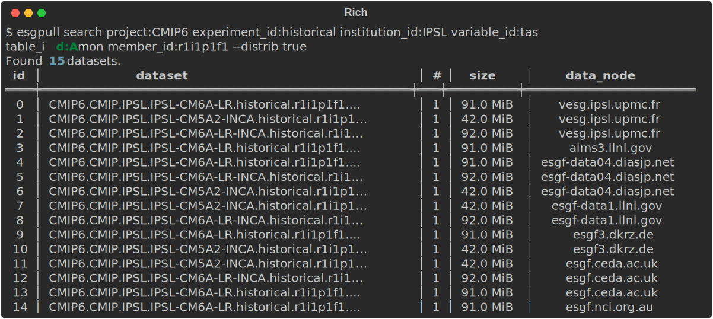
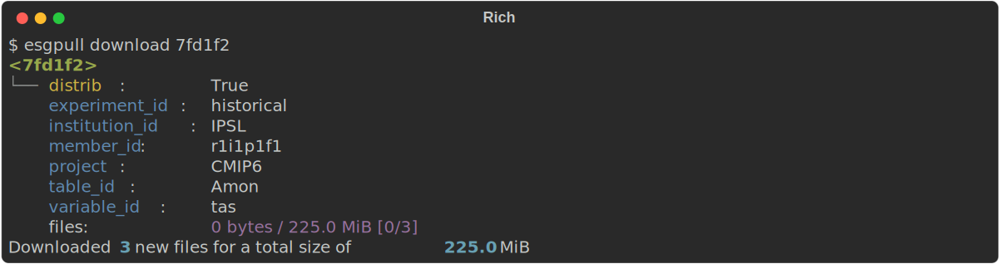

Download
With esgpull, downloading files is done after a few steps gradually altering the state of the query that is to be downloaded.
Datasets or files?
In the search page, we only talked about datasets, whereas this document mentions files.
For searching, datasets are used by default, since each file in a single dataset holds the same metadata. Then it makes sense to show datasets when exploring data.
esgpull only uses files in the database and for everything related to download.
To make things easier to explain, we will use the following example query in this document:
$ esgpull search project:CMIP6 experiment_id:historical institution_id:IPSL variable_id:tas table_id:Amon member_id:r1i1p1f1 --distrib true --show
Our query, named <7fd1f2>, corresponds to the following 15 datasets:

Adding a query¶
The first necessary step is to add <7fd1f2> to the database.
Simply replace search with add and remove any flags specific to the search command, in our case we need to remove --show.
$ esgpull add project:CMIP6 experiment_id:historical institution_id:IPSL variable_id:tas table_id:Amon member_id:r1i1p1f1 --distrib true
Option flags
Notice how we keep the --distrib true option flag. This is due to the fact that options (distrib, latest, replicas, retracted) are part of the query, since different values on these optoins yield different sets of files.
<7fd1f2> is now stored in the database, but it remains untracked.
Tracking a query¶
A query is untracked by default, to prevent downloading too much data by mistake.
When a query is tracked, it will always be checked for new files on later usage of the update command, if it is provided no arguments.
There are 2 ways to track a query:
- use the
trackcommand with the query id as an argument, - use the
--trackflag on theaddcommand to have it tracked directly.
Updating a query¶
To associate a query with actual files, it needs to be updated.
Updating a query will send requests to the ESGF search api to fetch metadata for each file corresponding to the query. Any file that is not already in the database is added and linked to the query. Files already in the database are simply linked to the query. This would happen for example if a file was previously fetched with another query.
For those familiar with package managers such as apt, the update command should feel familiar with how those require update lists to fetch latest versions of packages before actually downloading (and installing in this case).
Replicas
For this update, only 3 files were found from the initial 15, this is due to most of them being replicas.
Currently the choice of data node from which to download the files is simply whichever comes first.
Downloading¶
All that remains after these steps is to download the files:
Configuration¶
RAM usage for downloads is bounded by the following formula:
Failed downloads¶
For each failed download, their status will be set to error.
Those can be put back to the download queue, by using the retry command.
Usage: esgpull retry [OPTIONS] [[new|queued|starting|started|pausing|paused|er
ror|cancelled|done]]...
Options:
-a, --all
-v
-h, --help Show this message and exit.
Cancelled download
If esgpull has been stopped with with Ctrl+C while downloading, all incomplete downloads will have the cancelled status.
By default, retry will put both error and cancelled downloads back to the queue.
Unexpected errors
Some unexpected errors might break esgpull. In this case, the downloads will stay in a transient status starting.
The retry command will not send those to the queue by default. It can still be done using either:
esgpull retry startingto send only those back to the queueesgpull retry --allto send every download back to the queue (exceptdonedownloads of course)
Nodes with untrusted SSL certificates¶
Some data nodes may have untrusted SSL certificates.
Since esgpull uses SSL verification by default, there is a configuration option `download.disable_ssl` to bypass this behaviour.
SSL verification can also be bypassed for a single download using the `--disable-ssl` flag for the `esgpull download` command.